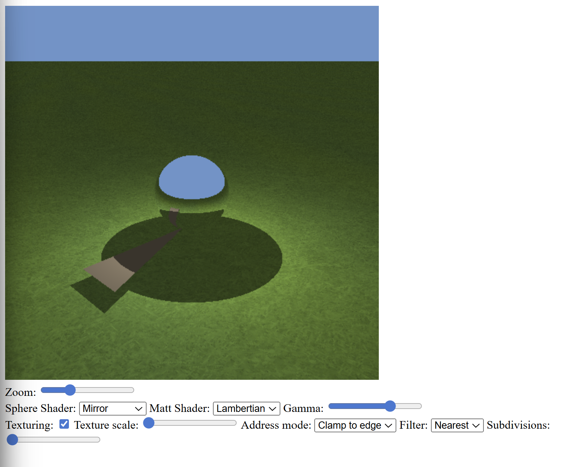
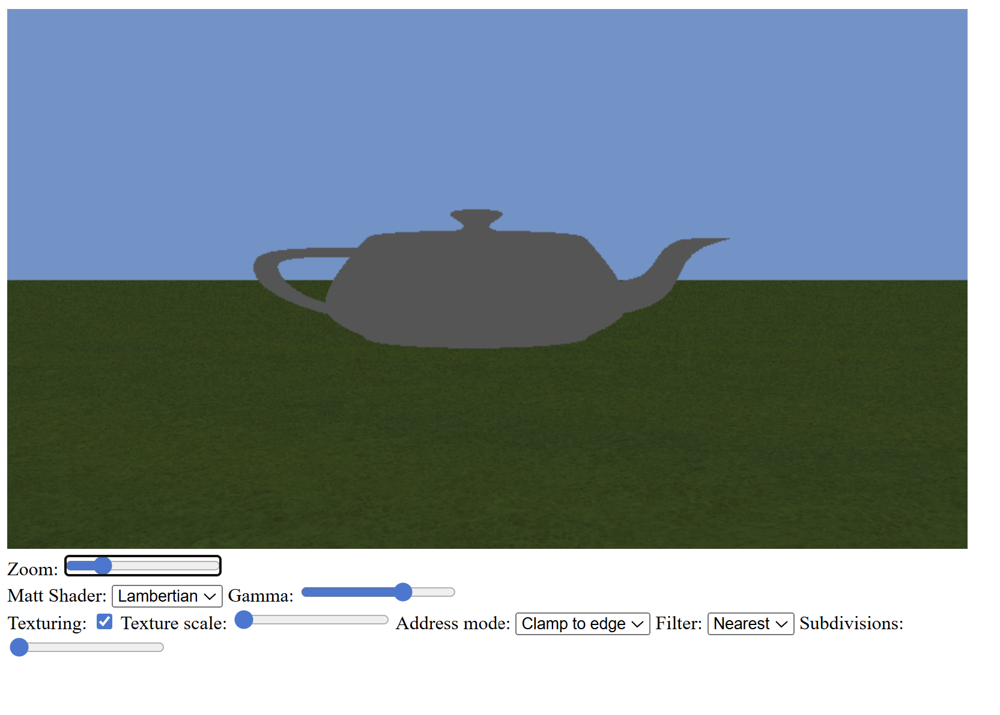
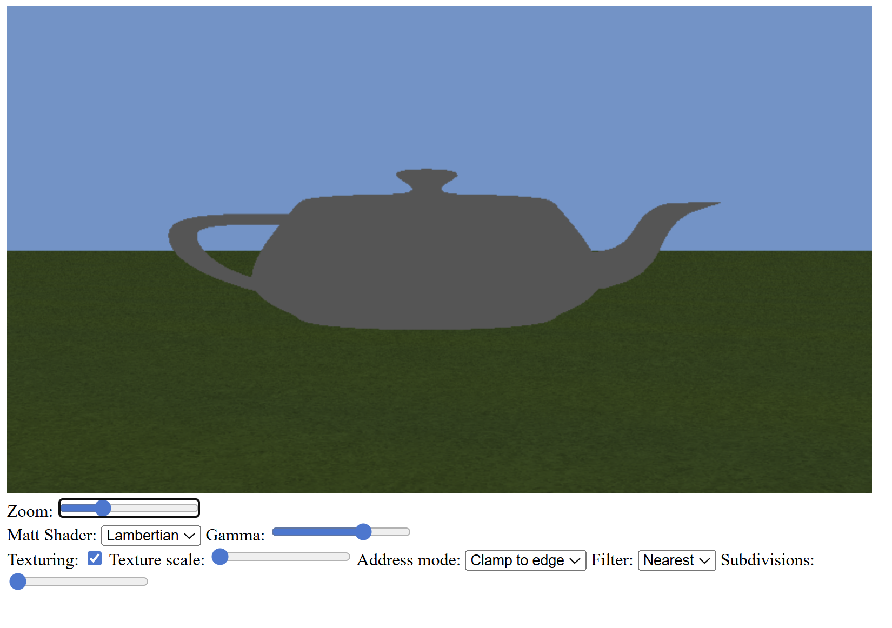
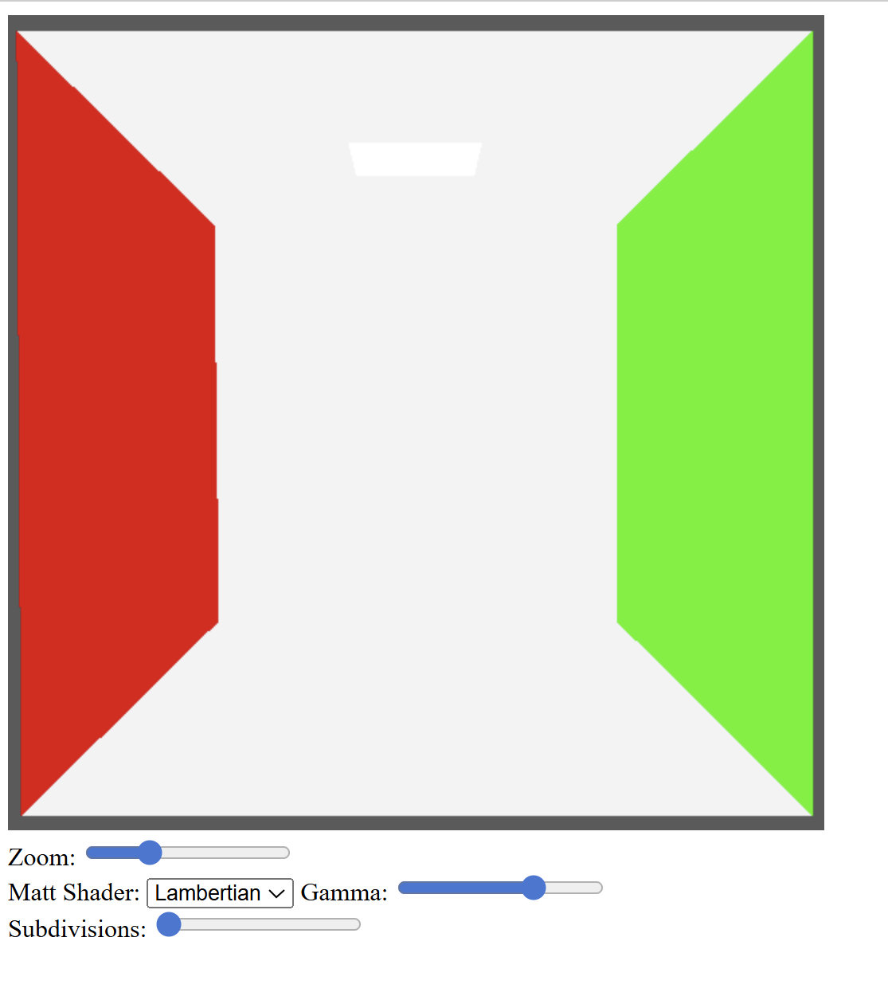
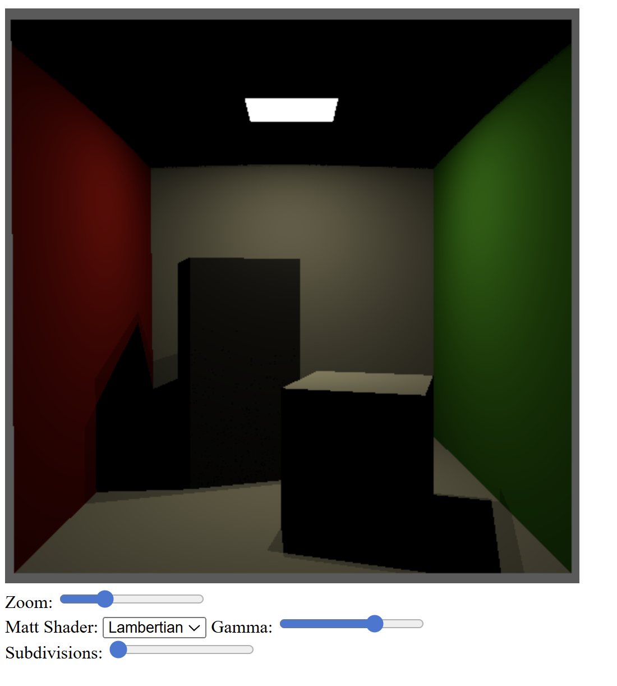

Exercise 1 — Indexed triangle mesh
Compared to the previous worksheets, I switched from hard-coded geometry to an
indexed face set loaded from an OBJ file.
Using OBJParser.js, I loaded a simple triangle mesh and uploaded its data to the GPU.
Vertex positions are stored in a storage buffer, and triangle indices are stored in a separate
index buffer. The intersect_triangle function was modified to take a face index
instead of explicit vertex positions.
In the scene intersection function, I now loop over all faces in the indexed face set to find the closest intersection.
Source code: GitHub – Worksheet 5 / Exercise 1
Exercise 2 — Utah teapot and directional light
Building on Exercise 1, I replaced the simple triangle with the Utah teapot mesh. The scene resolution was changed to 800×450, and the camera parameters were updated to match the values provided in the worksheet.
The sphere intersection was removed, and the scene now consists only of triangles from the indexed face set. The teapot is rendered with a constant diffuse color.
I also replaced the point light with a directional light. The light direction and emitted radiance are fixed, and the shading uses Lambert’s cosine law.
Source code: GitHub – Worksheet 5 / Exercise 2
Exercise 3 — Interpolated vertex normals
Compared to Exercise 2, I improved shading quality by using interpolated vertex normals instead of flat triangle normals.
The OBJ parser provides per-vertex normals, which are uploaded to the GPU in a storage buffer. Using the barycentric coordinates computed during ray–triangle intersection, I interpolate the three vertex normals at the hit point.
This results in smooth shading across the surface of the teapot instead of visible faceting.
Source code: GitHub – Worksheet 5 / Exercise 3
Exercise 4 — Cornell box and materials
The scene was changed again by loading the Cornell box with blocks. This model uses real-world dimensions, so the camera configuration was updated according to the worksheet instructions.
Each triangle in the mesh has an associated material index. I created a Material struct in WGSL containing diffuse color and emission. Material indices and material data are uploaded to the GPU using storage buffers.
At this stage, the scene is rendered using flat shading based on the sum of diffuse color and emission.
Source code: GitHub – Worksheet 5 / Exercise 4
Exercise 5 — Area lights from emissive triangles
Finally, I implemented lighting based on emissive triangles in the Cornell box. Triangles with non-zero emission are treated as light sources.
Their indices are uploaded in a separate buffer (light_indices),
and the scene is shaded using a point-light approximation of these emissive areas.
The shading takes into account the distance, orientation, and area of the emitting triangles, producing physically more meaningful illumination of the scene.
Source code: GitHub – Worksheet 5 / Exercise 5